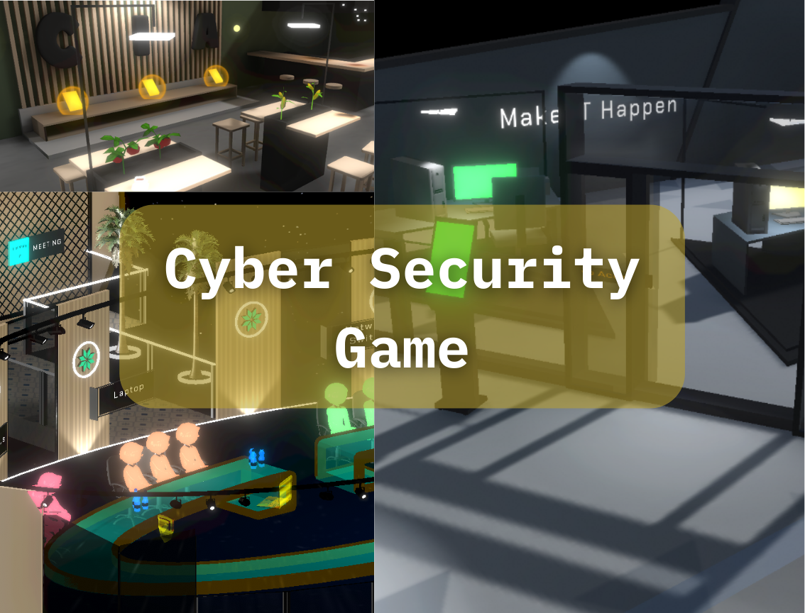
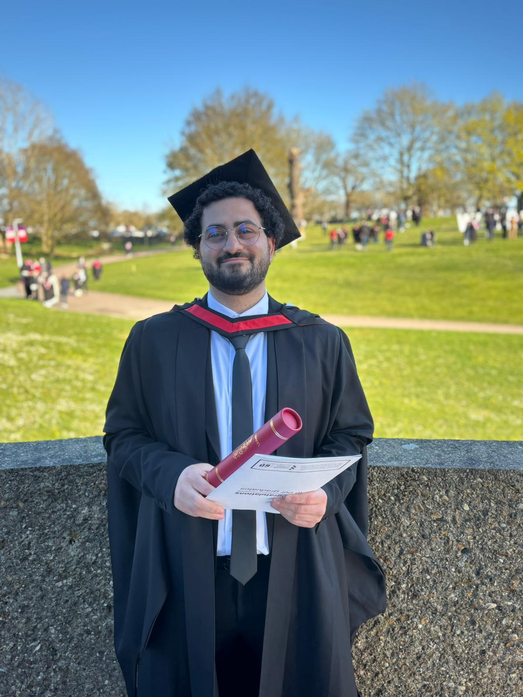

01 / VR · Unity · Research
MediSim
An interactive ECG simulation exploring how virtual reality can support medical learning.
View project ↗FURKAN ABAY / UNITY DEVELOPER & GAME DESIGNER
Hi, I’m Furkan. I build games in Unity and C# — from the first interaction to progression, analytics and monetisation. I publish my mobile games as Fabay Games.
Firebase events for tutorials, levels, screens, advertising and purchases.
↗02 / INTEGRATIONGoogle Mobile Ads, Unity IAP, restore flows and premium access.
↗03 / WORKFLOWLevel authoring, content validation and repeatable Unity scene setup.
↗01 / SELECTED WORK
An interactive ECG simulation exploring how virtual reality can support medical learning.
View project ↗
A decision-based simulation helping SME managers explore secure digital technology adoption.
View project ↗
A colourful puzzle game built around focus, attention and observation.
View project ↗
Flappy Bird-inspired mechanics meet a risk-and-reward arcade loop.
View project ↗02 / ABOUT ME

I’m Furkan Abay. I create and publish my games under the name Fabay Games, and this is my personal portfolio. It brings together my mobile games, university work, research projects and prototypes.
I studied Computer Engineering at Istanbul University and completed my MSc in Computer Games at the University of Essex. I enjoy exploring both game design and development, from a small gameplay idea to a playable experience.
I’m always learning through the things I build. Here you can explore my work, see how my projects play and get to know the person behind them.
University of Essex
Wodo Network
University of Essex
Istanbul University
03 / CONTACT